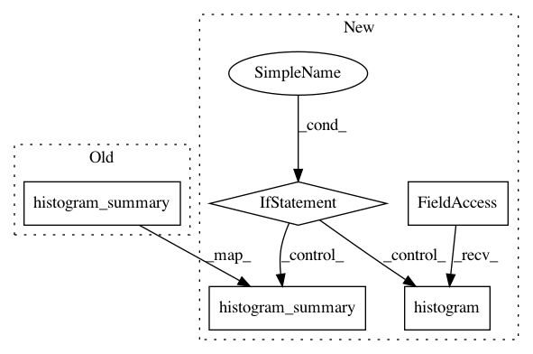

00c8b2f2e51117a91bcb52170fbcd98e6ef145e5,INCEPTION/image_retraining/retrain.py,,variable_summaries,#Any#Any#,699
Before Change
tf.scalar_summary("sttdev/" + name, stddev)
tf.scalar_summary("max/" + name, tf.reduce_max(var))
tf.scalar_summary("min/" + name, tf.reduce_min(var))
tf.histogram_summary(name, var)
def add_final_training_ops(class_count, final_tensor_name, bottleneck_tensor):
Adds a new softmax and fully-connected layer for training.
After Change
scalar_summary("sttdev/" + name, stddev)
scalar_summary("max/" + name, tf.reduce_max(var))
scalar_summary("min/" + name, tf.reduce_min(var))
if(int(tf.__version__.split(".")[0])<1): ////// For tf v<1.0
tf.histogram_summary(name, var)
else: ////// For tf v>=1.0
tf.summary.histogram(name, var)
def add_final_training_ops(class_count, final_tensor_name, bottleneck_tensor):
Adds a new softmax and fully-connected layer for training.
We need to retrain the top layer to identify our new classes, so this function
In pattern: SUPERPATTERN
Frequency: 3
Non-data size: 5
Instances
Project Name: DrewNF/Tensorflow_Object_Tracking_Video
Commit Name: 00c8b2f2e51117a91bcb52170fbcd98e6ef145e5
Time: 2019-04-19
Author: titanpycompat@gmail.com
File Name: INCEPTION/image_retraining/retrain.py
Class Name:
Method Name: variable_summaries
Project Name: keras-team/keras
Commit Name: aa18604fec4a309658bcc83b6aa595b5f0838d36
Time: 2017-01-11
Author: david.vetrano@gmail.com
File Name: keras/callbacks.py
Class Name: TensorBoard
Method Name: set_model
Project Name: DrewNF/Tensorflow_Object_Tracking_Video
Commit Name: 00c8b2f2e51117a91bcb52170fbcd98e6ef145e5
Time: 2019-04-19
Author: titanpycompat@gmail.com
File Name: INCEPTION/image_retraining/retrain.py
Class Name:
Method Name: add_final_training_ops